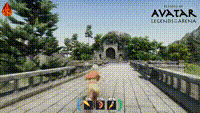

Back to projects

Unity game · 2021
Avatar: Legend of the Arena Remake
A remake of the classic Nickelodeon Avatar: The Last Airbender game, with real-time multiplayer built on Photon.
About this project
A full remake of the classic Nickelodeon game based on Avatar: The Last Airbender, built in Unity with Photon Networking for real-time multiplayer. The project was completed in one month in collaboration with a VFX artist.
Key features
- Real-time multiplayer with Photon Networking
- Character animation editing and adjustments
- Programming and animation delivered in one month
- Built in collaboration with a VFX artist
My contribution
I handled all of the programming and animation work, and collaborated with a VFX artist to ship the project in one month.